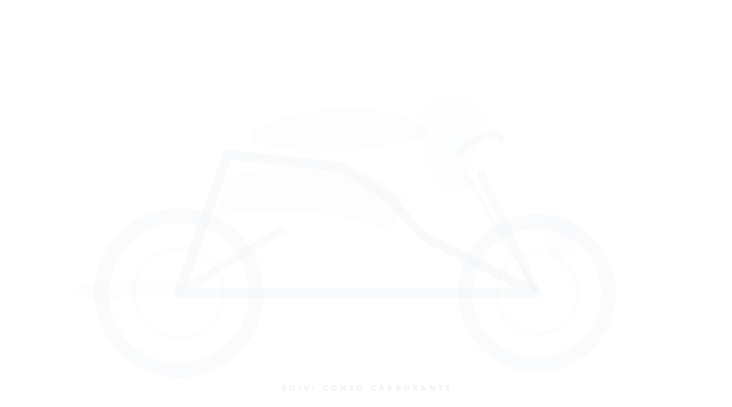
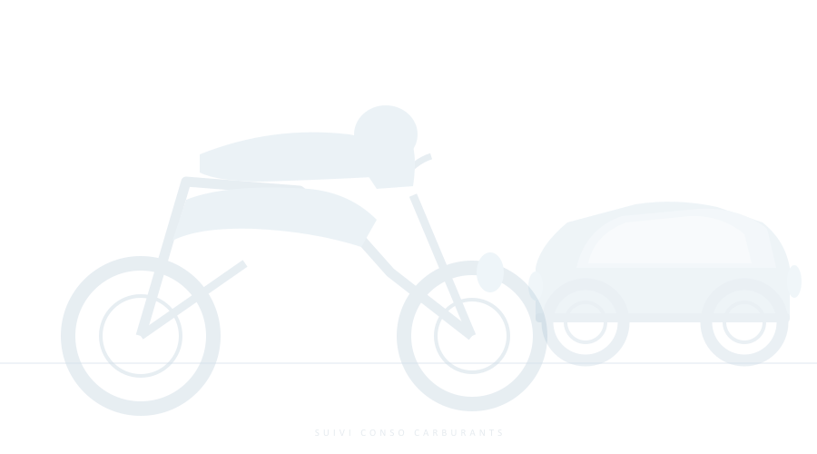
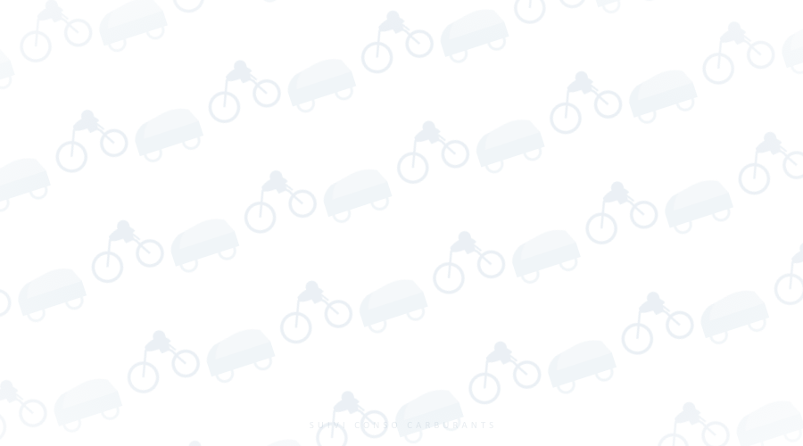
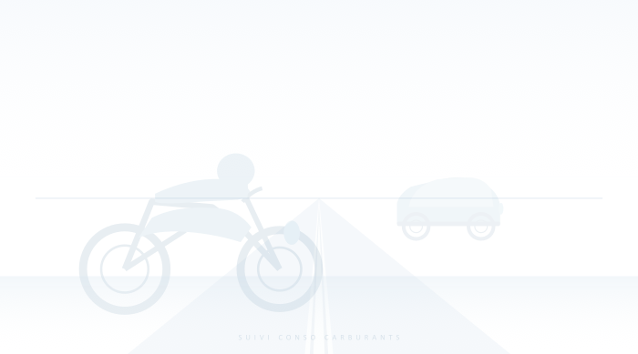

Silhouette technique d'une moto, style épuré, filigrane très discret

Duo véhicules, cohérent avec un suivi multi-véhicules

Petites motos + voitures en pattern répété, style papier peint technique

Grande moto en premier plan + voiture à l'horizon, effet de profondeur